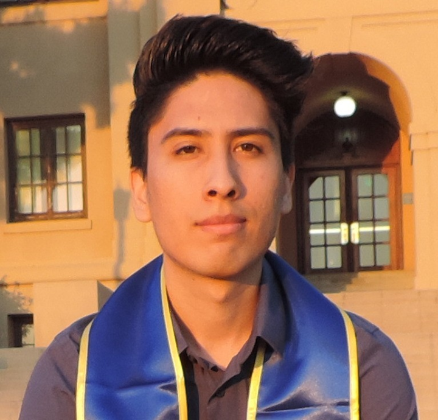

About Me

I was born in Glendora, CA on October 10, 1995. I graduated from UCR in 2017 with a Bachelor's in Marketing. Shortly after graduating college, I began working in Temecula for a Marketing agency. I was able to work with some of the most prestigious companies in the world. After working there for almost a year, I decided it was time to pursue a different career.
I left the company in June 2018 and took some time off. I began working again in March 2019 for a different company in Norco. I am currently still employed with this company.
I decided to attend the UCR Coding Boot Camp in order to completely change my career and open up other opportunities for growth within my current job. I am looking to pursue a career in software and web development. As a UCR grad, I believe attending the UCR Coding Boot Camp program was the right fit, since I am already familiar with UCR. I am excited for what this program will help me achieve in my professional career.